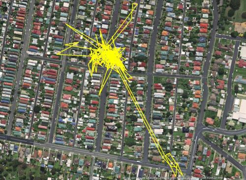

Haben Sie sich schon einmal gefragt, was Ihre Katze in der Nacht so macht? Wir haben die Lösung für Sie!
Bei einem Projekt von den "Central Tablelands Local Land Services" (Australien) wurde untersucht, wie weit sich Katzen von ihrem Zuhause weg bewegen, indem man ihnen einen GPS-Tracker angehängt hatte.
Etwa 15 Katzenbesitzer machten mit, und einige ihrer Katzen waren sehr viel unterwegs, wie man auf den Screenshots der getrackten Routen sehen kann.
Diese Katze wusste genau, zu welchen Häusern sie hinwollte. Vielleicht gab es dort ja auch etwas interessantes zu entdecken?
Und hier haben wir eine Aufzeichnung von einer halben Weltreise. Diese Katze drehte zuerst ihre Runden in der Nachbarschaft und entschied sich für einen spontanen Ausflug hinaus aus der Stadt und hinauf auf einen Hügel. Nach ihrer nächtlichen Reise kam sie fast am anderen Ende der Stadt wieder aus dem Wald heraus und fand ziemlich schnell wieder zurück zu ihrem Zuhause.
Sehr beeindruckend, falls diese Daten nicht durch eine Fehlmessung (Multipath-Effekt bzw. Diffraction) zustande gekommen sind!
Quelle:Mashable.com